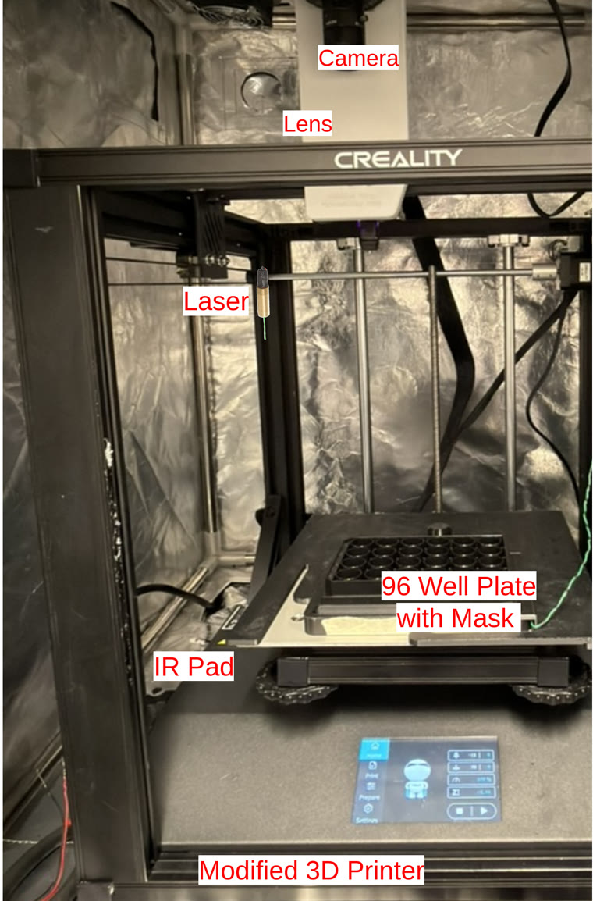
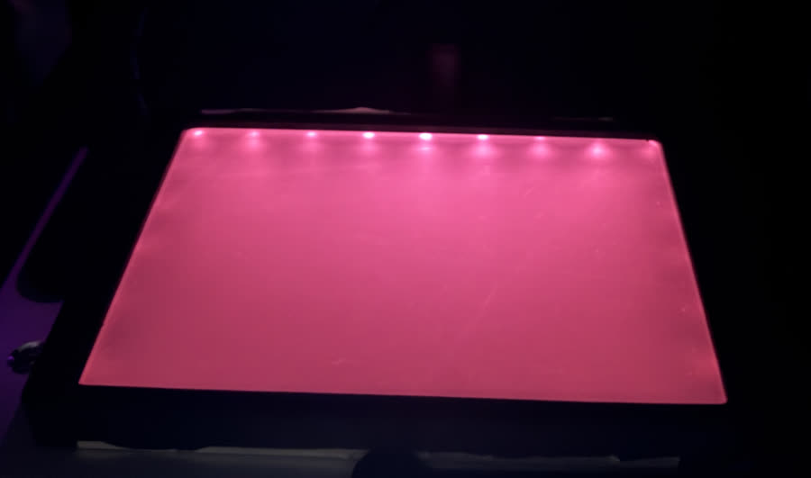

RoboCam 3.1 is the software layer. This page covers the physical rig it drives on the current lab build — what it's made of, and how to build one.

The apparatus, labeled — from the team's CCC Quarterly poster.
Creality Ender-5 S1 3D printer, stock Marlin firmware, repurposed as an XYZ positioning stage. Klipper-based controller boards are also supported by the software if you build on different hardware.
Player One Mars 662M (monochrome astronomy camera). A Player One Uranus M is currently being evaluated as an alternative.
Raspberry Pi 5, with an M.2 HAT+ and a 512GB NVMe SSD for local storage — replacing the earlier Pi 4 + microSD setup with much faster, higher-capacity storage for raw-burst capture.
Commonlands CIL 535 (C-mount), attached via a printed T2-to-C adapter.
Two LEDs, 495–600 nm, 2.0–2.4V forward voltage, 700 mA rated each (~500 mA combined when wired in parallel), driven through a MOSFET switched from a Raspberry Pi GPIO pin. Light passes through a tube-and-aperture system, reaching up to 500 lux at the height of a 24-well plate.
A DIY light pad built from an acrylic sheet edge-lit by IR LED strips, sitting beneath the well plate to provide even backlighting for imaging — separate from the visible-spectrum stimulus LEDs above.
Custom 3D-printed mount replacing the printer's extruder, holding the Player One camera and lens assembly in place of the print head.
Darkfield masks (24-well and 96-well variants) plus a base plate that clips the IR light pad to the printer bed with two sprung fingers for repeatable removal/reattachment.
The two stimulus LEDs are switched together via a MOSFET, gated from a Raspberry Pi GPIO pin — the same output the software's LaserController drives in rpi_gpio mode (configurable BCM pin, set in the Setup tab). Measured draw is ~500 mA combined with both LEDs wired in parallel, each individually rated to 700 mA at 2.0–2.4V.
Imaging illumination is handled separately by an IR backlight pad beneath the well plate: an acrylic sheet edge-lit by IR LED strips, diffusing light evenly upward through the plate rather than being switched per-experiment like the stimulus LEDs.

The IR backlight pad, illuminated.
Designed in Fusion 360 for the Ender-5 S1 + Player One combination above. STL files for printing are below; Fusion 360 source (.f3d) and step/iges exports are kept in the StentorCam repository's cad/ folder for anyone who needs to modify them.
The T2-to-C adapter has tight tolerances — it was designed for and printed on a Bambu X1C at highest layer precision with random seams enabled. Other printers/settings may need adjustment. The lens mount is specific to the Ender-5 S1's extruder mounting arrangement; other printers will need a redesign. The IR backlight pad itself is not a 3D-printed part — it's built from an acrylic sheet and IR LED strips — so there's no STL for it yet; a CAD design for a proper enclosure/mount may be added later.
rpi_gpio).| Item | Cost |
|---|---|
| 3D printer (Ender-5 S1) | $264 |
| Enclosure/tent | $70 |
| Monitor | $50 |
| Camera (Player One Mars 662M) | $270 |
| Lens | $50 |
| Compute & storage (Raspberry Pi 5 + M.2 HAT+ + 512GB SSD) | updating |
| Acrylic diffuser sheet | $15 |
| LED strip | $30 |
| LED/laser driver | $60 |
| Laser safety goggles | $20 |
| Acrylic backlight panel | $30 |
| Laser diode module | $13 |
| Misc. optics/assembly | $40 |
| Total (before tax) | updating |
Original bill of materials totaled $982 (before tax) with a Raspberry Pi 4 + microSD card ($80 combined) for compute/storage — now upgraded to a Raspberry Pi 5 with an M.2 HAT+ and 512GB NVMe SSD. Total will be updated once the new compute/storage cost is finalized.